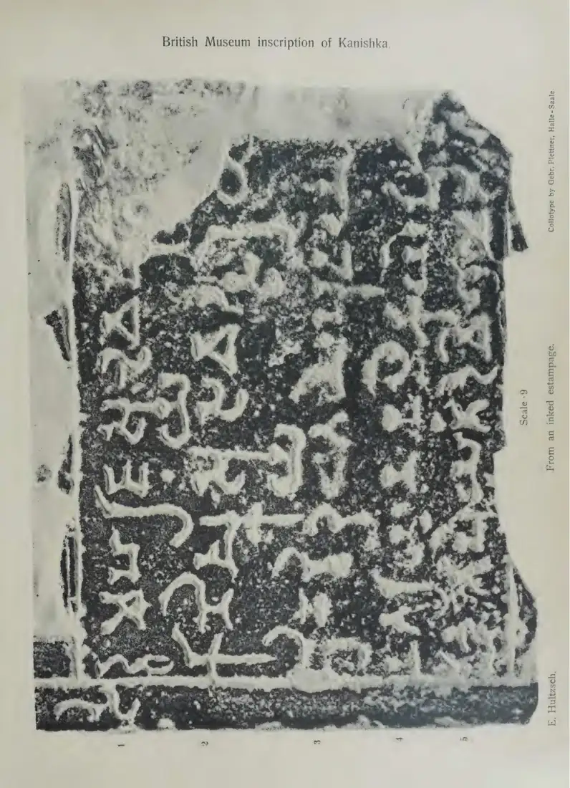
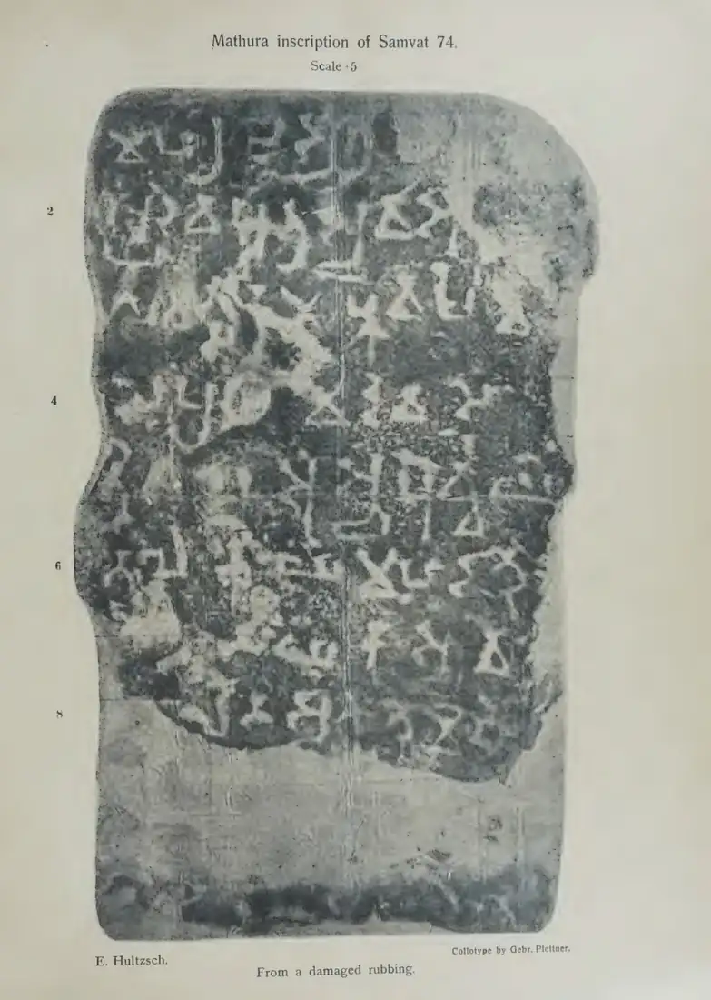

Three early Bráhmí inscriptions
THREE EARLY BRAHMI INSCRIPTIONS.
BY PROFESSOR H. LÜDERS, PH.D., ROSTOCK.
I.—BRITISH MUSEUM STONE INSCRIPTION OF THE TIME OF KAṇISHKA.
On the occasion of a visit to the British Museum in the autamn of 1906. I discovered in one of the cases of the Northern Gallery the stone bearing the subjoined inscription, which, as far as I know, has never been published before. At my request impressions were taken, from which I have prepared the transcript. Subsequently Dr. Fleet kindly sent me the photograph of the stone reproduced in the accompanying plate.
Nothing seems to be known about the origin of the stone, but the characters, the language and the date of the inscription prove that it comes from Northern India.
The sculpture at the top of the stone represents a man and a woman sitting on a bench. The woman to the left, wearing a loin-cloth and a girdle and the usual ornaments round the neck, the wrists, the ankles and in the lobes of the ear, rests her left elbow on the knee of her left leg which she has placed on the top of the bench, and turns her laughing face to the spectator. The male person also is wearing a necklace, bracelets, ear-drops, and a dhoti covering the knees. He is sitting astride, and with the right hand he touches, or points to, a sort of stand placed between the two persons on the bench and bearing what would seem to be a cushion adorned by three small square marks and supporting some bell-shaped object. Right over the head of the man there appears something which at first sight looks almost like a club, but which in my opinion probably is the mutilated head of a cobra. As the stone is broken off immediately above the head of the female person, it is quite possible that her head also was overshadowed by a similar representation of a serpent's head, and it seems to me very probable therefore that the sculpture represents a Nāga and his wife.
The writing is Brāhmī of the earlier Kushaṇa type. The subscript ya is expressed by the full sign, and the sha shows the old form with the small cross-bar. The language is the usual mixed dialect. The inscription, which is dated in the tenth year of mahārāja dēvaputra Kaṇishka, records the gift of a temple. Details will be discussed below.
1 [In the original the name Ādichchaṇ-Umaiyammai is not repeated as it is represented in the translation. It looks as if Śrīvallavaṅgōdai was seated with the members of the assembly of Tiruchchengunṇrūr in the palace at Kollam (ll. 4-5) while making the gift to Ādichchaṇ Umaiyammai. Accordingly I would translate this sentence as follows:—“(The following are) the sādhus who know (the transaction entered into) at the place at which (Ādichchaṇ Umaiyammai)—while Śrīvallavaṅgōdai was sitting with (the assembly ?) —granted the ktiīdu (of the land ?) to the lord (bhattāraka) of Tiruchchengunṇrūr.” The same fact is referred to in lines 8 and 9.—V. V.]
2 [The name of the man was apparently Dēvaṇ Pavittiraṇ.—V. V.]
3 I.e. the terms of this transaction and bear witness to the same.
4 [Parandavaṇ is apparently a tadbhava of the Sanskrit Paraṅtapa.—V. V.]
TEXT.
1 Siddha[m]1 maharâjasya dêva[putrasya]2
2 Kânishkasya savatsarê [10]3
3 gri 2 di 9 êtayê purvay[ê]4
4 [u]tarâyam5 na[va]mikâyam6 [h]â-
5 [rmya]n=[d]ata[n.]7 priyatâm dêvi8 grâ[masya].9
REMARKS.
1 The anusvâra is indistinct because it is crossed by the line forming the base of the sculpture. — 2 The reading of the bracketed characters is certain, though the surface of the stone has peeled off at the corner. — 3 This figure also has suffered from the peeling off of the surface, but the reading is beyond doubt. — 4 The ê is very indistinct, and the correct reading may possibly be purvaya or purvayam. — 5 At first sight one might feel inclined to read natarâyam, but the base-line of the first letter is quite straight, whereas na has a distinctly curved base. I feel therefore sure that what appears to be the continuation of the base-line to the left, is merely due to a flaw in the stone. — 6 The two convergent side-lines of the va are not very distinct, just as in the same letter in line 3, and there appears a vertical in the middle which makes the letter look almost like na. But this line is far too thin to really form part of the letter and must be accidental. — 7 The bracketed letters of these two words are more or less damaged, but the reading seems to be sure. — 8 The ê-stroke is added to the top of the letter, whereas in dê in the first line it is added in the middle. — 9 The last two letters are damaged, but only the ya can be said to be conjectural.
TRANSLATION.
Success! In the year 10 of the mahârâja dêvaputra Kânishka, in the second (month of) summer, on the ninth day,—on that (date specified as) above a temple was given in the northern navamikâ (?). May the goddess of the village be pleased!
NOTES.
The orthography of the inscription is very irregular, double consonants, long vowels and the anusvâra being frequently not expressed in writing. A long â appears in the word hârmya. According to the St. Petersburg Dictionary the same form is found also in the Taitt. Âr. VI, 6, 2 instead of the ordinary harmya occurring in the corresponding verse in Atharvav. XVIII, 4, 55. In hârmyan=datam the final m is converted into the nasal before the following mute, which is rare in inscriptions in this dialect. Another instance is found in the concluding words of the Mathurâ inscription, above Vol. I. p. 386, No. 8: priyatâm=bhagavân=Rishabhaśrih, which at the same time help us to understand the phrase found at the end of the present record: priyatâm dêvi grâmasya.
Of greater interest is the spelling of the king's name, Kânishka, with a long vowel in the first syllable and a lingual n. With regard to the latter point, the seven Brâhmî inscriptions that have preserved the name are in perfect agreement.1 In the Kharôshthî inscriptions of Suê Vihâr2 and Zeda3 the name is read as Kanishka, in that of Manikyâla as Kaneshka,4 but I am by no means sure whether in the two last mentioned inscriptions the readings Kanishka and
1 Mathurâ inscr. of S. 5, Ind. Ant. Vol. XXIII. p. 34 ff., No. 4; Mathurâ inscr. of S. 7, above Vol. I. p. 391, No. 19; Mathurâ inscr. of S. 9, Vienna Or. Journ. Vol. I. p. 173, No. 2, and Ind. Ant. Vol. XXIII. p. 37, No. 6; Mathurâ inscr., Ind. Ant. Vol. XXIII. p. 149, No. 25; Sârnâth inscr. of S. 3, above Vol. VIII. p. 176, No. 3a; Sârnâth inscr. of S. 3, above Vol. III. p. 179, No. 3d.
2 Ind. Ant. Vol. X. p. 326.
3 Journ. As. Ser. VIII. Vol. XV. p. 137.
4 Journ. As. Ser. IX. Vol. VII. p. 8.
Plate 1 is bound after this page.
Kaneshka would not be preferable. On the whole, contemporary records certainly are in favour of the spelling with the lingual n, and I would therefore propose to use Kanishka as the common form of the name. The spelling with the long vowel in the first syllable as in the present inscription is unusual, but it does not stand quite alone. In the Sârnâth inscription, No. 3a, the editor, it is true, reads Kanishkasya, but the photo-lithograph1 distinctly shows Kânishkasya.
Turning to the special object of the inscription, we may infer from the concluding words that the temple was dedicated to a goddess, and the representation of the two Nâgas above the inscription makes it not unlikely, I think, that the goddess intended was a Nâgî. That during the Kushana period there existed temples for the worship of serpents in Northern India, is well attested by the two Mathurâ inscriptions2 which mention the temple (st[h]âna) of the nâgêndra Dadhikarna and a servant at the temple of the same Dadhikarna (Dadhikarnṇadvikulika).
The most difficult words of the inscription are utarâyañ navamikâyañ. I have thought for some time that they might be part of the date and mean 'on the following (i.e. intercalated) ninth (lunar day)', but for two reasons this idea must be given up. Firstly, such a statement would be in the wrong place after étayé purvayé, and secondly, as Professor Kielhorn informs me, uttara is never used in the sense of adhika or dvitîya.3 The words must therefore be connected with hârmyan=datañ, and as a form ending in -âyañ can hardly be anything else but the locative singular of a stem in â; utarâ navamikâ would seem to denote either the locality where the temple was erected or, possibly, the goddess to whom it was dedicated. However, these explanations are far from satisfactory. Neither has navamikâ the appearance of being the name of a locality, nor does utarâ navamikâ in the least sound like the name of a goddess or a Nâgî. I am at present unable to solve this difficulty.
II.—MATHURÂ STONE INSCRIPTION, DATED SAMVAT 74.
This inscription is engraved on a stone-slab discovered by Sir Alexander Cunningham in the Jail Mound at Mathurâ. It was first edited in 1870, together with facsimiles, by Rajendralala Mitra in the Journ. Beng. As. Soc. Vol. XXXIX. Part I. p. 129, No. 15, and by Dowson in the Journ. Roy. As. Soc. New Ser. Vol. V. p. 183, No. 4. In 1873 Cunningham published it again with a facsimile in the Arch. Surv. Rep. Vol. III. p. 32, No. 8, and in 1904 I have treated it myself in the Ind. Ant. Vol. XXXIII. p. 106, No. 20. I edit it here again for a special reason. When I was in Oxford in 1905, Professor Hoernle kindly made over to me the collection of impressions, rubbings and drawings of inscriptions formed by him when preparing the second volume of the Corpus Inscriptionum Indicarum, which was to contain the 'Indo-Scythic' inscriptions. In this collection there is also the impression which I have used for the present edition. It cannot be said to be first-rate and, as unfortunately most of the impressions of this collection, it has been tampered with in some places by pencilling out parts of letters that in the impression itself are more or less effaced. Nevertheless the impression is of the greatest value as shown by the following note written on the margin, probably by General Cunningham himself: 'The only impression now available.—The stone has been lost at Agra.' Under these circumstances it seemed to me desirable to publish the accompanying reproduction of the impression, which in spite of its shortcomings naturally is far superior to the drawings published hitherto. Professor Hoernle's collection contains besides two facsimiles. The one is an eye-copy in red and blue pencil on a slightly reduced scale, made according to a marginal note by Captain Watis, Royal Engineers, the other is a pencil-tracing on transparent paper, perhaps made from the stone itself, but afterwards gone over with China-ink, blue and red pencil, and practically of no value.
1 [I have some weeks ago examined the original and the â is quite certain.—S. K.]
2 Ep. Ind. Vol. I. p. 390, No. 18; Ind. Ant. Vol. XXXIII. p. 102, No. 13.
3 Professor Hultzsch writes to me that he is nevertheless inclined to connect utarâyañ navamikâyañ with the date, but he would take uttara in the sense of uchyamâna, uparv-likhita, 'above-mentioned.'
The inscription is divided by a blank space into two parts. The upper portion, containing eight lines, is complete with the exception of some letters at the end of the first two lines, which have disappeared by the breaking off of the right corner of the stone. Of the lower portion which in Dowson's and Cunningham's facsimiles has been omitted altogether, nothing is left but faint traces of some characters in the first line. The characters are Bráhmi of the Kushaṇa type. The sha appears in the older form with the small cross-bar, but the subscript ya shows the cursive form. The language is the mixed dialect. The inscription is dated in the year 74 of a mahárája rá[játirája] dêvaputra whose name began with Vásu, but owing to its fragmentary state its real purport cannot be made out.
TEXT.
1 Mahárajasya1 r[á].....2
2 sya dêvaputrasya Vásu.....3
3 savatsaré4 705 4 varsham[á]-6
4 sê prathamê divasê
5 tris[ê]7 30 asyam8 purvvayam9
6 Talakiy[ê]10 mahadânda-
7 nâyakasya11 Vâ-
8 linas[y]a12 k[shê]t[rê]13 Mihi-
9 ..... [mahâdanda]14-.
REMARKS.
1 The á-stroke is distinctly visible in the impression, although it does not appear in Capt. Watts' eye-copy.—2 The á-stroke is uncertain. Restore rájátirája.—3 The á-stroke is quite distinct, though here again it is omitted in Capt. Watts' eye-copy. As regards the restoring of the line, I refer to the remarks below.—4 The é-stroke, omitted in Capt. Watts' eye-copy, is quite distinct.—5 Owing to a flaw in the stone, a small portion of the lower left cross-bar of the symbol has disappeared. In the impression somebody has tried to restore the missing portion by adding in pencil a hook turning upwards, but there is nothing to warrant this restoration. There can be no doubt that the symbol had the shape of a plain St. Andrew's cross, just as in other inscriptions. The lower right cross-bar also has been pencilled over in the impression, but this is of no consequence as it is perfectly distinct. The meaning of the symbol will be discussed below.—6 The upper portion of the m and the á are not quite distinct.—7 The é-stroke is indistinct, and the śa has suffered from a hole in the paper.—8 The apparent curving of the tail of the a has been caused by pencilling. In Capt. Watts' eye-copy the tail is quite straight.—9 Above the pu there is a distinct stroke which must be accidental.—10 There are some strokes behind and below the ta, but they are not noticed in Capt. Watts' eye-copy and may be accidental. The é-stroke is not very distinct, and the reading Talakiyam would be possible.—11 Capt. Watts expressly states that there are no traces of letters before the ná of line 7 and the li of line 8. The ná has been pencilled over so as to look almost like sá, but there can be no doubt that it is ná, and as such it appears also in Capt. Watts' eye-copy.—12 The ya is damaged, but certain.—13 The ksh of the first and the r of the second syllable are damaged, but certain. The é of kshé is very faint and not given in Capt. Watts' eye-copy. The last syllable may also be tró as in Capt. Watts' eye-copy.—14 Of this word only faint traces are visible in the impression, and the reading rests almost entirely on Capt. Watts' eye-copy. Instead of da Capt. Watts gives dé.
TRANSLATION.
In the year 74 of the mahárája rájátirája dêvaputra Vásu....., in the first month of the rainy season, on the thirtieth day, 30,—on that (date specified as) above, in the field (?) of the great general Válina at Talakiya (or Talaki?) Mihi.....
Plate 2 is bound after this page.
NOTES.
The orthography shows the usual features. The lengthening of the vowel in dânda appears again in the same word in the Set-Mahet inscription, above Vol. VIII, p. 181, and we may further compare such forms as âmtêvâsisa and âmtêvâsinîyê in the Mathurâ inscriptions, Ep. Ind. Vol. II. p. 198 f., Nos. 1 and 4.
As regards the date, the first symbol of the date of the year requires a fuller consideration, as it has been differently interpreted. As already stated above, it has the shape of a St. Andrew's cross. Cunningham1 originally read it as 40, and he was followed by Dowson, who in editing the Mathurâ inscriptions everywhere adopted Cunningham's readings of the dates.2 In 1891 Bühler expressed his belief that the sign really represented 70,3 and this opinion was endorsed in the following year by Cunningham in his paper on the coins of the Kushapas in the Numismatic Chronicle, Ser. III. Vol. XII. p. 50, note 6.
I accordingly read the symbol as 70 when I published the inscription in the Indian Antiquary, and I am still convinced that Bühler was right, but in order to settle this question definitely, it will be necessary to examine the other Northern Brâhmi inscriptions where the same sign occurs. They are the following seven, all of which come from Mathurâ or its neighbourhood :—
(1) Mathurâ inscription of the time of svûmin mahâkshatrapa Śođâsa, Ep. Ind. Vol. II. p. 199, No. 2, and Plate. In the Vienna Or. Journ. Vol. V. p. 177, Bühler read the symbol as 40, adding 70 in brackets. In the Ep. Ind., loc. cit., Bühler again gave 40 in the text, but added in a note that the symbol might possibly be 70. And lastly in Ep. Ind. Vol. IV. p. 55, note 2, he stated that he would now remove the alternative reading 42, which he had thought admissible at first.
(2) Kâman inscription, Ep. Ind. Vol. II. p. 212, No. 42, and Plate. Here Bühler rendered the sign by 70 in the text, but added in a footnote that it might also be read as 40.
(3) Mathurâ inscription, Journ. Beng. As. Soc. Vol. XXXIX. Part I. p. 130, No. 17, and Plate; Journ. Roy. As. Soc. New Ser. Vol. V. p. 183, No. 5, and Plate; Arch. Surv. Rep. Vol. III. p. 33, No. 11, and Plate. Cunningham and Dowson read the sign as 40, and I have followed them in Ind. Ant. Vol. XXXIII. p. 102.
(4) Mathurâ inscription, Journ. Beng. As. Soc. Vol. XXXIX. Part I. p. 127, No. 1, and Plate; Journ. Roy. As. Soc. New Ser. Vol. V. p. 182, No. 1, and Plate; Arch. Surv. Rep. Vol. III. p. 33, No. 12, and Plate. Cunningham and Dowson read the sign as 40, and I have adopted this reading in Ind. Ant. Vol. XXXIII. p. 101, No. 11.
(5) Mathurâ inscription, Journ. Beng. As. Soc. Vol. XXXIX. Part I. p. 127, No. 2, and Plate; Journ. Roy. As. Soc. New Ser. Vol. V. p. 183, No. 2, and Plate; Arch. Surv. Rep. Vol. III. p. 34, No. 13, and Plate. Cunningham and Dowson read the sign as 40, and I have followed them in Ind. Ant. Vol. XXXIII, p. 102, No. 13.
(6) Mathurâ inscription, Journ. Beng. As. Soc. Vol. XXXIX. Part I. p. 130, No. 18, and Plate. The facsimile is very poor. In the Ind. Ant. Vol. XXXIII. p. 101, No. 12, I have read the sign as 40, but I have pointed out also that the inscription is possibly identical with that referred to under No. 3.
(7) Mathurâ inscription, Journ. Roy. As. Soc. New Ser. Vol. V. p. 184, No. 7, and Plate; Arch. Surv. Rep. Vol. III. p. 34, No. 14, and Plate. Cunningham and Dowson read the sign as 40.
1 The absurd opinions of Rajendralala Mitra may be passed over in silence.
2 Compare Cunningham's remarks, Journ. Roy. As. Soc. New Ser. Vol. V. p. 194.
3 Ep. Ind. Vol. I. p. 373, note 7.
It thus appears that the symbol has hitherto been treated sometimes as 40 and sometimes as 70, but it will be readily conceded, I think, that it is impossible to assign two different values to the same sign in inscriptions of the same locality and the same period. But before we can decide which of the two interpretations is the correct one, we shall have to examine also the other symbols supposed to represent either 40 or 70 in the early Bráhmî inscriptions of Northern India. The following inscriptions, which for convenience sake I number in continuation of the list given above, must be taken into consideration :—
(8) Mathurâ inscription of the time of mahárája Huviksha, Ep. Ind. Vol. I. p. 387, No. 9, and Plate. The symbol resembles the ligature pta and was read by Bühler as 40.
(9) Mathurâ inscription, Ep. Ind. Vol. I. p. 387, No. 10, and Plate. The general appearance of the symbol is the same as in No. 8, but its lower part is not quite distinct in the photo-lithograph. Bühler read the sign as 40.
(10) Mathurâ inscription, Arch. Surv. Rep. Vol. III. p. 33, No. 10, and Plate ; Ep. Ind. Vol. I. p. 396, No. 30, and Plate. The symbol generally has the same form as that in No. 8, but its lower part is a little more cursive. Cunningham and Bühler read it as 40.
(11) Mathurâ inscription of the time of mahárája Huvishka, Arch. Surv. Rep. Vol. III. p. 34, No. 15, and Platé. The symbol is the same as in No. 8. Cunningham read it as 40, and I have followed him in my treatment of the record in the Ind. Ant. Vol. XXIII. p. 103, No. 14.
(12) Mathurâ inscription, Ep. Ind. Vol. II. p. 204, No. 20, and Plate ; p. 321, and Plate. The upper part of the symbol is the same as in Nos. 8—11, but its lower part is a distinct loop. Bühler read the sign as 70.
(13) Mathurâ inscription, Ep. Ind. Vol. I. p. 387, No. 11, and Plate. As Bühler expressly states in a footnote that the symbol is a plain pta, it may have been so in the impression before him. In the photo-lithograph, however, it does not bear the slightest resemblance to that sign, but looks exactly like the letter bra. Bühler read the symbol as 40.
(14) Sàüchi inscription of the time of mahárája rájátirája dévaputra Sháhi Vásashka, Ep. Ind. Vol. II. p. 369 f., and Plate. The symbol found here has quite a peculiar shape. Provided that the vertical standing behind it does not belong to it, but is part of the following sign for 8, it resembles the usual sign for 20. As such it was read also at first by Bühler, but at Cunningham's suggestion he afterwards took it to be 70. The reading of the sign was then discussed at length by Dr. Fleet in a paper in the Journ. Roy. As. Soc. 1903, p. 326 ff., and he came to the conclusion that it was 20. But later on, when Mr. Vincent Smith in his Early History of India, p. 238, had suggested that the symbol might be read as 60, Dr. Fleet admitted the possibility of this interpretation ; see Journ. Roy. As. Soc. 1905, p. 357.1
Leaving aside for the present the symbols found in the last three inscriptions, it appears that there are two symbols, the St. Andrew's cross and the pta, one of which must represent 70 and the other 40. Now in the inscription which forms the subject of this paper the St. Andrew's cross cannot represent 40, as in that case the inscription would be dated in the year 44 in the reign of a king whose name begins with Vásu, whereas we know that from 33-60 Huvishka was the reigning monarch in this part of the country. Here, therefore, the St. Andrew's cross must represent 70, and we must accordingly assign the same value to the symbol also in the inscriptions enumerated above under Nos. 1-7. We thus get the dates S. 72 for No. 1, S. 74 for
1 Another sign that originally was read 40 by Bühler, is found in the Mathurâ inscription of the time of mahárája rájátirája dévaputra Huvashka, Ep. Ind. Vol. I. p. 386, No. 8, and Plate. Later on Bühler declared that on further consideration he read the symbol as 60, and as such it has been treated since then everywhere ; see Ep. Ind. Vol. II. p. 204, note 61.
No. 2, and S. 77 for Nos. 3-7. The inscriptions themselves contain nothing to contradict this result. No. 4, it is true, mentions the mahārāja rājātīrāja dēvaputra Hūvishka, but not in connection with the date, the inscription simply recording a gift to the vihāra of that king. As to the date S. 72 for the mahākshatrapa Šojāsa, I refer to the remarks of Dr. Fleet in the Journ. Roy. As. Soc. 1907, p. 1024 ff.
If the St. Andrew's cross represents 70, the sign resembling pta must be 40. The inscription No. 8, therefore, would be dated in S. 44, No. 9 in S. 45, No. 10 in S. 47, and No. 11 in S. 48, which is in accordance with the statements of Nos. 8 and 11 that their dates fall into the reign of Huviksha or Huvishka.
The symbol occurring in No. 12 undoubtedly differs from either of the two symbols found in Nos. 1-11, but whereas it bears no resemblance whatever to the cross-shaped sign, it is easily intelligible as a cursive development of the pta sign.1 In my opinion therefore this sign also must be taken as 40, and the inscription as being dated in S. 49, not S. 79. There is another point in favour of this interpretation. The inscription records a gift made at the request of the venerable Vṛidhahasti (Vṛiddhahastin), a preacher in the Koftīya(Koftīka)gaṇa, the Vaīrā (Vajri) śākhā. There is another Mathurâ inscription dated in S. 60,2 recording a gift made at the request of the gaṇin, the venerable Kharpa, a pupil of this same Vṛiddhahastin. If Vṛiddhahastin in S. 60 had a pupil who had acquired the dignity of gaṇin, he must have been a man advanced in years at that time, and although, of course, it is not impossible that he was still alive in S. 79, it would certainly seem more natural to find him as a spiritual adviser in S. 49 and his pupil in the same capacity eleven years later on, in S. 60.
Little can be said about the symbol occurring in No. 13. The form appearing in the photo-lithograph is quite peculiar and unlike any other symbol in the inscriptions from Mathurâ or elsewhere, but in accordance with Bühler's statement, it may be provisionally taken as 40.
As regards the symbol in No. 14, I agree with Dr. Fleet that there is no reason whatever why it should be 70, as even the sign in No. 12, which Bühler cited in support of this interpretation, is to be read not 70, but 40. On the other hand, I feel sure that it is not 20. I have lately received through Dr. Konow impressions of an inscription running round the base of a pillar preserved in the Mathurâ Museum. The inscription, which is in Brahmi characters of the Kushaṇa type, is partly worn, but the date is quite distinct. Now the sign for the tens in the date of the year is the same as that in the Sāñchi inscription, showing again the vertical, which is thus proved to be an integrant part of it and not to belong to the following sign. And although unfortunately the text of the inscription contains nothing that would enable us to form a positive opinion on the value of the symbol, we may safely assert that it cannot be 20, as we find this number expressed by the usual sign in the date of the day. Lastly also the proposal to treat the symbol as 60 cannot be said to be convincing, the sign that has hitherto been read as 60 in the inscriptions of the Kushaṇa period3 certainly being4 entirely different. I do not want to offer a new hypothesis. In my opinion we shall have to wait for fresh materials before we can hope to arrive at a satisfactory result in this question. In how far the restoring of the king's name in our inscription of S. 74 is influenced by this uncertainty, will be shown below.
I know that the results arrived at above are partly not in harmony with those deduced from the coins of the Western Kshatrapas. The numeral signs occurring in the legends of those coins are given in table IX, col. V, of Bühler's Indische Paläographie from Professor Rapson's table in
1 Perhaps the symbol found in No. 9 forms the intermediate stage between the pta and the looped sign. As I have stated above, its lower part is not quite distinct in the photo-lithograph, but it does not seem to me impossible that here also it consists not of the usual fork, but of a loop, though a much smaller one than in No. 12.
2 Ep. Ind. Vol. I. p. 386, No. 8, and Plate.
3 Ep. Ind. Vol. I. p. 386, No. 8, and Plate; Vol. II. p. 204, No. 19, and Plate; Arch. Surv. Rep. Vol. XX. p. 37, and Plate V, fig. 6.
the Journ. Roy. As. Soc. 1890, Plate to p. 639. Here the St. Andrew's cross has been entered as 40, and a sign much resembling the pta and another looped sign almost exactly like that of No. 12 as 70. I do not wish to throw any doubts on the correctness of these readings, but I contend that for such questions inscriptions must be treated separately according to time and locality.
Rajendralala Mitra, Dowson and Cunningham agreed in restoring the name of the king as Våsu[dīvasya]. When I edited the inscription from the facsimiles published by my predecessors, I drew attention to the circumstance that the available space is hardly sufficient for the three aksharas dēvasya, and I proposed to restore the name as Våsushkasya, as this name of the king seemed to be attested by two other inscriptions of S. 76 and S. 78,1 whereas the first undoubted record of Våsudēva's reign was dated in S. 80. What I said about the difficulty of supplying three syllables is confirmed by the impression now before me, although owing to the frequent irregularity of the writing in these inscriptions it is impossible to speak on this point with absolute certainty. But the evidence for the existence of a king Våsushka in S. 76 and S. 78 is not so strong as it seemed to be formerly. As I have tried to show above, the date of the Sāñchi inscription mentioning a king Våsashka2 is quite uncertain, and the Mathurâ inscription mentioned by Führer as being dated in S. 76 and recording repairs in the reign of Våsushka has not yet been published. As Dr. Konow informs me, it cannot even be found now, Führer's trenches having been filled up again a long time ago and the exact spot where the inscription was found being no more known. Under these circumstances a decision is, of course, impossible for the present. If Führer's statement after all should prove correct, I should unhesitatingly restore Våsu to Våsushkasya, otherwise the reading Våsudēvasya will have to be accepted.
The rest of the inscription calls for few remarks. Talakiya or Talakî seems to be the name of a locality, but I am unable to identify it. The title mahádaṇdaṇâyaka is frequent in the inscriptions of the Gupta period and later times. In the Kushaṇa inscriptions it has not yet been found before, but the subordinate title of daṇdaṇâyaka occurs in the Manikyâla inscription,3 where the correct reading in l. 2 is, not Laladoṣa-nayago, but Lala-daṣanayago.
III.—MATHURÂ STONE INSCRIPTION OF THE TIME OF ŚOŹDÂSA.
This inscription was first published, together with a facsimile, in 1870 by Professor Dowson in the Journ. Roy. As. Soc. New Ser. Vol. V. p. 188, No. 29. In 1873 it was published again with a facsimile by Cunningham in the Arch. Surv. Rep. Vol. III. p. 30, No. 1. And in 1904 I have tried to edit the text from those two facsimiles in the Ind. Ant. Vol. XXXIII. p. 149, No. 24. For the present edition of the record I have made use of an impression found in Professor Hoernle's collection described above.
Cunningham states that the stone bearing the inscription was found in the Jail Mound at Mathurâ. According to Dowson, it has been cut through and the first part of it has been carried off. On the other hand, the facsimiles distinctly showed that something was missing at the right end, and thus I was led to suppose that the stone was damaged on both sides. This, however, is not the case. Nothing is missing at the beginning of the writing on the left, and on the right also only one letter has been cut off at the end of the first two lines. With this exception the inscription is in an excellent state of preservation.
1 Mathurâ inscription of S. 76, mentioned by Führer, Progress Report for 1895-96; Sāñchi inscription of S. 78, edited by Bühler, Ep. Ind. Vol. II. p. 369 f.
2 This is the reading suggested by Dr. Fleet, Journ. Roy. As. Soc. 1903, p. 326, but he is himself inclined to look upon this form as a mere variant of Våsushka, if the existence of such a name should be proved; see Journ. Roy. As. Soc. 1905, p. 357 f.
3 Journ. As. Ser. IX. Vol. VII. p. 8 f.
The characters are of the so-called archaic type of the Mathurâ inscriptions; see especially the letters da, śu and sha, and the subscript ya. The language is the mixed dialect. The inscription is not dated. It records various gifts of a Brahman of the Śēgrava (Śaigrava) gôtra, the treasurer of svâmin mahâkshatrapa Śoṇḍâsa. For details I refer to the remarks below.
TEXT.
1 Svâmisya mahâkshatrapasya Śoṇḍâsasya1 gaṇjavarēṇa brâhmaṇēna Śēgrava-sagôtrēṇa [p]...2.
2 raṇi imâshâṇ yamaḍa-pushkaraṇinaṇ paśchimâ pushkaraṇi udapânô ârâmô 3 stambhô i...
3 [śilâ]patṭô 4 cha-.
REMARKS.
1 As to the reading of this name see the remarks below.—2 Little is left of the pa, but the reading is certain. Restore pushka-. —3 The outlines of the letters ṇi udapânô ârâmô are more or less touched up with pencil, but the reading is perfectly certain.—4 The reading śilâ is certain, although the letters are entirely spoiled by being gone over with pencil.
TRANSLATION.
By the treasurer of the lord, the mahâkshatrapa Śoṇḍâsa, a Brâhmaṇ of the Śēgrava (Śaigrava) gôtra, a tank, the western tank of these twin tanks, a reservoir, a grove, a pillar and this stone-slab (was caused to be made).
NOTES.
As regards the language, the most interesting form is imâshâṇ. Apparently in the dialect of Mathurâ the genitives plur. of the pronoun were, as in Pâli, imêsaṇ and imâsaṇ, and the author of the inscription translated the latter form into imêshâṇ as he was wont to render imêsaṇ by imêshâṇ. The nominative sing. mase. of the same pronoun is found at the end of line 2, but unfortunately nothing is left of it but the initial î. The word pushkaraṇi shows in the third syllable the vocalisation of the Pâli pukhtraṇi. Yamaḍa corresponds to Skt. yamala or yamala, as the word would be written in Southern manuscripts. The construction of the inscription is rather peculiar, the verb or participle on which the instrumentals brâhmaṇēna, etc., depend, being omitted.
The first point to command attention is the name of the mahâkshatrapa, which is generally supposed to be Śoṇḍâsa. In the present inscription there is a distinct sign above the śo. It must have been found also in the impressions used by Dowson and Cunningham, as the former reads Śândâsasya (for Śoṇḍâsasya) and the latter Śândâsasya (for Śândâsasya), although the faces-miles show no trace whatever of anusvâra or au. The sign cannot be the stroke denoting au, as it does not touch the upper line of the śo, but is separated from it by a distinct blank space. It can only be an anusvâra of the same bulky shape as that in gaṇjavarēṇa and in pushkaraṇinaṇ.
The form Śoṇḍâsa has not yet been recognised anywhere else. In the second Brâhmi inscription at Mathurâ mentioning this mahâkshatrapa1 Bühler read Śoṇâsasa, but the photo-lithograph by no means excludes the reading Śoṇâsasa. Right above the śo there is a white spot scarcely less distinct than that above the mr of hêmaṇtamâsâ which Bühler read as anusvâra. In the Mathurâ lion-capital inscription2 Mr. Thomas reads the name as Śuḍasa and Śuḍisa, and with regard to coins, Professor Rapson has stated in the Journ. Roy. As. Soc. 1903, p. 289, note 3, that whenever the name is legible, the first akshara seems to be śo, and that the alternative forms Śu° and Śau°, given by Bhagvanlal and Cunningham respectively, cannot be
1 Ep. Ind. Vol. II. p. 199, No. 2.
2 Above, Vol. IX. pp. 143, 144.
certainly read on any of the specimens of the British Museum. But even if a re-examination should prove the readings Šođása and Šuđása to be correct, this would not invalidate the reading of the present inscription. Everybody familiar with the records of this period knows how often an anusvára is omitted in writing, and that on that account the reading Šoňđása, even if found once only, carries more weight than the reading Šođása occurring ten times. In my opinion therefore Šoňđása must be accepted as the general form of the name.
Scarcely less interesting is the designation of the donor. Dowson and Cunningham read gajavaréna, and Bühler, Vienna Or. Journ. Vol. V. p. 177, proposed to alter the unintelligible syllables gaja into rajé, 'during the reign.' The new reading gaňjavaréna shows that gaňjavara, 'treasurer,' which hitherto was known only from the Rájataraňginí V, 177 and Kshěměndra's Lókaprakáša, was an official title in India already in much earlier times. As recognised by Benfey,1 gaňjavara is the Persian ganjwar, and the use of this title is a new proof of the strong Parthian influence that made itself felt in Northern India from the time of Ašôka to the beginning of the Gupta empire.2
The donor calls himself by his gótra name Šégrava, which in correct Sanskrit would be Šaigrava. According to the Gaṇapátha the Šaigrava gótra is referred to by Pâpini in II, 4, 67 and IV, 1, 104. I have also no doubt that Professor Kern is right in identifying Šaigrava with Pâli Siggava,3 the name of the patriarch who conferred the upasampadá ordinance on the great Tissa Moggaliputta.4
1 See the St. Petersburg Dictionary s. v.
2 In the Journ. Roy. As. Soc. 1903, p. 289 ff., Professor Rapson has described a coin that shows a general similarity to those of Šoňđása. With the exception of the first three aksharas the inscription is not quite certain. Professor Rapson reads: brahmanđ[na go(?)đa va(?)-tha(?). na]. Would it be too bold to conjecture that the bráhmaṇa mentioned here may have some connection with the bráhmaṇa Šaigrava, the gaňjavara of Šoňđása, and that the reading must be altered accordingly?
3 Geschiedenis van het Buddhisme in Indië, Vol. II. p. 266.
4 See Dípav. V, 57; 69, etc.

